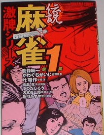

伝説麻雀・激牌シリーズ１（ぶんか社）というコミックを買った。内容はこれまでに発表された中から印象に残った作品をおさめたもの。
「風牌にふかれて（能条純一・S62・近麻ゴールド）」
「東大プロ雀士(鳴島生・S61/5・芳文コミック)」
「發の罠（つのだじろう/S44/11・プレイコミック）」
「深夜劇場（叶精作S50/11・コミックVAN）」
「花牌ギャル(地引かずや・S56・アクションコミックス)」
「我を忘れて九連宝灯（沢本栄二郎・S62/12・劇がスペシャル）」
の６作品が収められている。

いずれもリアルタイムで読んだ作品ばかりで懐かしかった。この中では「發の罠（つのだじろう」が一番印象に残っている。
それよりも参考になったのが、巻末の「麻雀まんが小史」というコラム。それによれば、本邦初の麻雀コミックは、この第１集にも収録されている「發の罠（つのだじろう/S44/11・プレイコミック）」だという。
いうまでもなく作家の「つのだじろう」は「うしろの百太郎」など霊モノで有名な人。まさかこの人が、日本で最初に麻雀漫画を書いた人とは知らなんだ。
いや、ひょっとしたら、本人も本邦初とは知らないような気がする。(^^；
それにしても、さっき言った通り、この作品はリアルタイムで読んでいる（当時、プレイコミックを愛読（?）していた）。そのとき、σ(-＿-)も（ふ、面白い）と思ったことを覚えている。その週刊誌をちゃんととっておけば、今頃、でっかい顔ができたのに（当時、入門書や戦術書はコレクトしていたが、週刊誌までは気が回っていなかった）。ああ、返すがえすも残念だ。誰か持っている人、σ(^_^)の心がこもった色紙と交換する気はないか（笑）
|